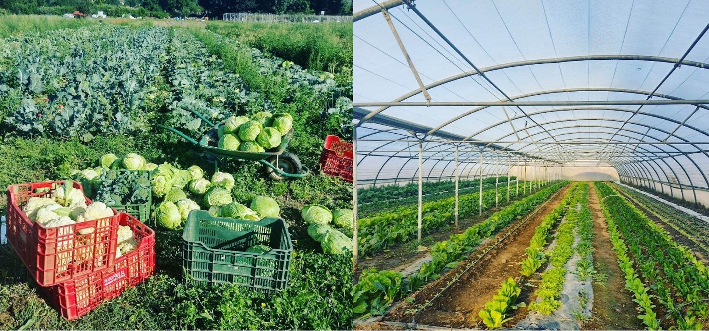

1Economía Circular
Es un modelo económico que busca romper con el ciclo lineal de "usar y desechar"...
Por el equipo organizador
"La economía circular no es una opción, es una necesidad urgente para mantenernos dentro de los límites del planeta." — Walter R. Stahel
En un mundo donde los recursos naturales se agotan a un ritmo alarmante...
Para entender la economía circular, es fundamental familiarizarse con algunos conceptos clave...
Es un modelo económico que busca romper con el ciclo lineal de "usar y desechar"...
Se refiere al conjunto de acciones enfocadas en recolectar, tratar, reutilizar o reciclar...
Es el proceso natural mediante el cual los residuos orgánicos se descomponen...
"[...] promover jornadas de economía circular en la Sierra de Madrid..." CSA Vega del Jarama
Promover jornadas de economía circular en la Sierra de Madrid...
La jornada se celebrará el 13 y 14 de septiembre de 2025 en el Centro Artesanal Torrearte...
Durante dos días, se abordarán temas como la ecología industrial...
Entre los ponentes destacados se encuentran... Walter R. Stahel, Jocelyn Blériot, Leyla Acaroglu, Ken Webster.

Además de las conferencias, se celebrarán talleres participativos...